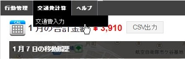

ユーザーの操作方法¶
ログイン¶
- ログインは こちらのページ からできます。
- ユーザー、グループ管理者の場合は、GPS Punch!のアプリと同じアカウントでログインします。
- システム管理者の場合は、契約時にお伝えしたアカウントでログインします。
{kind=link}
メイン画面¶
上部のメニューから交通費入力画面に移動します。

交通費の修正・確定をする¶
左上のカレンダーを押すと、1日の交通費金額入りのカレンダーが表示されます。
{kind=link}
- 日付をクリックすると、その日の交通費を修正・確定することができます。
- カレンダー内の色は以下の状態を表しています。
| 色 | 状態 |
|---|---|
| 白 | 移動なし |
| グレー | 移動あり、交通費未確定 |
| 緑 | 移動あり、交通費確定済み |
操作画面¶
{kind=link}
画面右のコントロールパネルの機能は以下のようになっています。
- 個人設定を変更します。 ->詳細はこちら
- 日付を1日ずつ切り替えます。
- 同日内の 移動 を切り替えます。
- 新しい 移動 を追加します。
- 現在表示されている移動の内容を修正できます。 ->詳細はこちら
- 現在表示されている 移動 を削除できます。
- 経路検索結果の中から、別の経路候補に切り替えることができます。
- 現在選択している候補の路線情報が表示されます。
- 現在表示されている候補を選択します。
- 現在選択している日付のすべての 移動 の経路、金額を確定します。
確定した日付は修正できなくなります。
| 項目 | 説明 |
|---|---|
| 出発、行先 | 位置情報から検出した付近の駅名が表示されます。 |※変更した場合は経路の再検索が必要です。 |
| 運賃 | ICカードを選択すると1円単位で運賃を算出します。 |
| 座席 | 特急の座席を選択して、運賃を変更できます。 | ※候補の中に特急を利用する経路が含まれている場合のみ表示されます。 |
| 備考 | メモなど、フリー入力ができます。 |
不要な移動を削除する場合は以下の手順になります。
{kind=link}
- 同日内の 移動 を切り替え、不要な移動を選択します。
- 「この移動を削除」ボタンを押すと、確認ダイアログが出るので「削除」を押します。
- 同日内の 移動 をすべて確認した上で、「交通費を確定」を押します。
- 確定をしないと削除が完了しません。
個人設定をする¶
{kind=link}
交通費自動計算の結果を、より自分の利用ケースに合わせて算出できるよう、ここで調整します。
- 経路の検索オプションを設定することができます。 ->詳細はこちら
- 定期情報の編集ができます。
- 定期情報を削除できます。
- 定期情報を追加できます。
定期情報の設定¶
{kind=link}
定期情報を設定することで、交通費算出の際に定期区間を除外して計算します。
- 自宅最寄り駅と職場最寄り駅を入力して「経路を検索ボタン」を押すと設定画面が表示されます。
- 検索結果の候補駅が表示されます。適切な駅を選択してください。（変更した場合は経路の再検索が必要です。）
- タブをクリックすると、別の経路候補に切り替えることができます。
- 現在選択している候補の路線情報が表示されます。
- 「この候補を選択」をクリックすると、選択している候補に切り替わります。
- 定期券の利用開始日を選択します。（定期の適用期間が決定します。）
- 「この経路を定期区間として設定」ボタンを押すと、定期券情報が確定します。
| 項目 | 説明 |
|---|---|
| 並び順 | 経路計算を時間が短い順、金額が安い順、乗り換え回数が少ない順のいずれかに変更できます。 |
| 特急座席 | いつも利用する特急座席タイプをデフォルトにできます。 |
| 運賃 | IC、現金のいずれかをデフォルトにできます。 |
| 直行直帰 | 出勤・退勤時の位置情報が定期区間外の場合は、その位置から職場まで（出勤）または、その位置から自宅まで（退勤）の経路を追加します。 |
直行直帰の計算について¶
- 直行直帰の計算を有効にしている場合と無効にしている場合の1日の計算例です。
定期券区間: 新宿（自宅） - 東京（職場） ある1日の移動:
- 三鷹の客先付近で出勤 (ここでGPS Punch!の記録を開始）
- 中野に移動
- 川崎に移動して退勤 (ここでGPS Punch!の記録を停止）
| 直行直帰を計算する | 直行直帰を計算しない |
|---|---|
| 新宿 - 三鷹 220円 | なし |
| 三鷹 - 中野 170円 | 三鷹 - 中野 170円 |
| 中野 - 横浜 640円 | 中野 - 横浜 640円 |
| 横浜 - 新宿 550円 | なし |